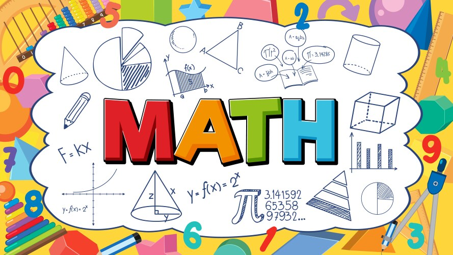

| About me | Home | Interests | Portfolio | Email me |
|---|---|---|---|---|
|
 | |
|
| Lamborghini | Roblox Tycoon Games | Math | Programming |
 |
I'm interested in cars, especially Lamborghinis — I love their design and speed. I enjoy playing Roblox tycoon games in my free time. They’re fun, creative, and a great way to relax. I also love subjects like math, programming, and science — I find them exciting and fun to learn! My favorite dishes are:
|
Press the images — they lead to websites!